grunt
是一套前端自动化工具，一个基于nodeJs的命令行工具，一般用于：
① 压缩文件
② 合并文件
③ 简单语法检查
对于其他用法，我还不太清楚，我们这里简单介绍下grunt的压缩、合并文件，初学，有误请包涵
准备阶段
1、nodeJs环境
因为grunt是基于nodeJs的，所以首先各位需要安装nodeJS环境，这块我们便不管了
http://www.cnblogs.com/yexiaochai/p/3527418.html
2、安装grunt
有了nodeJs环境后，我们便可以开始搞grunt了，因为我们可能在任何目录下运行打包程序，所以我们需要安装CLI
官方推荐在全局安装CLI（grunt的命令行接口）
npm install -g grunt-cli
这条命令将会把grunt命令植入系统路径，这样就能在任意目录运行他，原因是
每次运行grunt时，它都会使用node的require查找本地是否安装grunt，如果找到CLI便加载这个本地grunt库
然后应用我们项目中的GruntFile配置，并执行任务
PS：这段先不要管，安装完了往下看
实例学习：打包zepto
一些东西说多了都是泪，直接先上实例吧，实例结束后再说其它的
首先在D盘新建一个项目（文件夹就好）
在里面新增两个文件（不要问为什么，搞进去先）
① package.json
{ "name": "demo", "file": "zepto", "version": "0.1.0", "description": "demo", "license": "MIT", "devDependencies": { "grunt": "~0.4.1", "grunt-contrib-jshint": "~0.6.3", "grunt-contrib-uglify": "~0.2.1", "grunt-contrib-requirejs": "~0.4.1", "grunt-contrib-copy": "~0.4.1", "grunt-contrib-clean": "~0.5.0", "grunt-strip": "~0.2.1" }, "dependencies": { "express": "3.x" } }
② Gruntfile.js
完了我们需要在grunt目录下执行 npm install将相关的文件下载下来：
$ cd d:
$ cd grunt
然后我们的目录就会多一点东西：
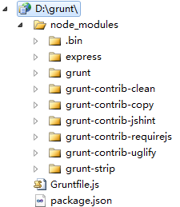
多了很多东西，先别管事干什么的，我们后面都会用到，这个时候在目录下新建src文件夹，并且搞一个zepto进去
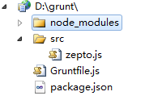
然后在Gruntfile中新增以下代码（先别管，增加再说）
module.exports = function (grunt) { // 项目配置 grunt.initConfig({ pkg: grunt.file.readJSON('package.json'), uglify: { options: { banner: '/*! <%= pkg.file %> <%= grunt.template.today("yyyy-mm-dd") %> */\n' }, build: { src: 'src/<%=pkg.file %>.js', dest: 'dest/<%= pkg.file %>.min.js' } } }); // 加载提供"uglify"任务的插件 grunt.loadNpmTasks('grunt-contrib-uglify'); // 默认任务 grunt.registerTask('default', ['uglify']); }
然后运行 grunt命令后
grunt
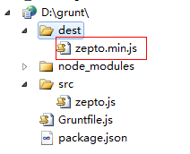
嗯嗯，多了一个文件，并且是压缩的，不差！！！第一步结束
认识Gruntdile与package.json
不出意外，每一个gurnt都会需要这两个文件，并且很可能就只有这两个文件（复杂的情况有所不同）
package.json
这个文件用来存储npm模块的依赖项（比如我们的打包若是依赖requireJS的插件，这里就需要配置）
然后，我们会在里面配置一些不一样的信息，比如我们上面的file，这些数据都会放到package中
对于package的灵活配置，我们会在后面提到
Gruntfile
这个文件尤其关键，他一般干两件事情：
① 读取package信息
② 插件加载、注册任务，运行任务（grunt对外的接口全部写在这里面）
Gruntfile一般由四个部分组成
① 包装函数
这个包装函数没什么东西，意思就是我们所有的代码必须放到这个函数里面
module.exports = function (grunt) { //你的代码 }
这个不用知道为什么，直接将代码放入即可
② 项目/任务配置
我们在Gruntfile一般第一个用到的就是initConfig方法配置依赖信息
pkg: grunt.file.readJSON('package.json')
这里的 grunt.file.readJSON就会将我们的配置文件读出，并且转换为json对象
然后我们在后面的地方就可以采用pkg.XXX的方式访问其中的数据了
值得注意的是这里使用的是underscore模板引擎，所以你在这里可以写很多东西
uglify是一个插件的，我们在package依赖项进行了配置，这个时候我们为系统配置了一个任务
uglify（压缩），他会干这几个事情：
① 在src中找到zepto进行压缩（具体名字在package中找到）
② 找到dest目录，没有就新建，然后将压缩文件搞进去
③ 在上面加几个描述语言
这个任务配置其实就是一个方法接口调用，按照规范来就好，暂时不予关注，内幕后期来
这里只是定义了相关参数，但是并未加载实际函数，所以后面马上就有一句：
grunt.loadNpmTasks('grunt-contrib-uglify');
用于加载相关插件
最后注册一个自定义任务（其实也是默认任务），所以我们下面的命令行是等效的：
grunt == grunt uglify
至此，我们就简单解析了一番grunt的整个操作，下面来合并文件的例子
合并文件
合并文件依赖于grunt-contrib-concat插件，所以我们的package依赖项要新增一项
"devDependencies": { "grunt": "~0.4.1", "grunt-contrib-jshint": "~0.6.3", "grunt-contrib-concat": "~0.3.0", "grunt-contrib-uglify": "~0.2.1", "grunt-contrib-requirejs": "~0.4.1", "grunt-contrib-copy": "~0.4.1", "grunt-contrib-clean": "~0.5.0", "grunt-strip": "~0.2.1" },
然后再将代码写成这个样子
module.exports = function (grunt) { // 项目配置 grunt.initConfig({ pkg: grunt.file.readJSON('package.json'), concat: { options: { separator: ';' }, dist: { src: ['src/zepto.js', 'src/underscore.js', 'src/backbone.js'], dest: 'dest/libs.js' } } }); grunt.loadNpmTasks('grunt-contrib-concat'); // 默认任务 grunt.registerTask('default', ['concat']); }
运行后，神奇的一幕发生了：
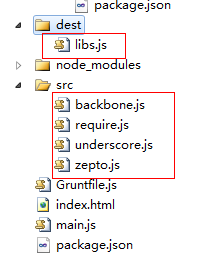
三个文件被压缩成了一个，但是没有压缩，所以，我们这里再加一步操作，将之压缩后再合并
module.exports = function (grunt) { // 项目配置 grunt.initConfig({ pkg: grunt.file.readJSON('package.json'), concat: { options: { separator: ';' }, dist: { src: ['src/zepto.js', 'src/underscore.js', 'src/backbone.js'], dest: 'dest/libs.js' } }, uglify: { build: { src: 'dest/libs.js', dest: 'dest/libs.min.js' } } }); grunt.loadNpmTasks('grunt-contrib-uglify'); grunt.loadNpmTasks('grunt-contrib-concat'); // 默认任务 grunt.registerTask('default', ['concat', 'uglify']); }
我这里的做法是先合并形成一个libs，然后再将libs压缩成libs.min.js
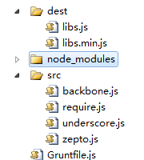
所以我们这里换个做法，先压缩再合并，其实unglify已经干了这些事情了
module.exports = function (grunt) { // 项目配置 grunt.initConfig({ pkg: grunt.file.readJSON('package.json'), uglify: { "my_target": { "files": { 'dest/libs.min.js': ['src/zepto.js', 'src/underscore.js', 'src/backbone.js'] } } } }); grunt.loadNpmTasks('grunt-contrib-uglify'); // 默认任务 grunt.registerTask('default', ['uglify']); }
所以，我们就暂时不去关注concat了
最后，今天时间不早了，我们最后研究下grunt配合require于是便结束今天的学习吧
合并requireJS管理的文件
有了前面基础后，我们来干一件平时很头疼的事情，便是将require管理的所有js文件给压缩了合并为一个文件
首先我们建立一个简单的程序，里面使用了zepto、backbone、underscore（事实上我并未使用什么）
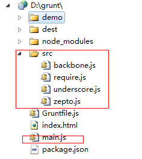
在main.js中新增代码：
require.config({ baseUrl: '', shim: { $: { exports: 'zepto' }, _: { exports: '_' }, B: { deps: [ '_', '$' ], exports: 'Backbone' } }, paths: { '$': 'src/zepto', '_': 'src/underscore', 'B': 'src/backbone' } }); requirejs(['B'], function (b) { });
这样的话运行会自动加载几个文件，我们现在希望将之合并为一个libs.js该怎么干呢？？？
我们这里使用自定义任务方法来做，因为我们好像没有介绍他
要使用requireJS相关需要插件
grunt.loadNpmTasks('grunt-contrib-requirejs');
因为我们以后可能存在配置文件存在各个项目文件的情况，所以我们这里将requireJs相关的配置放入gruntCfg.json中
这样我们的package.json就没有什么实际意义了：
{ "name": "demo", "version": "0.1.0", "description": "demo", "license": "MIT", "devDependencies": { "grunt": "~0.4.1", "grunt-contrib-jshint": "~0.6.3", "grunt-contrib-concat": "~0.3.0", "grunt-contrib-uglify": "~0.2.1", "grunt-contrib-requirejs": "~0.4.1", "grunt-contrib-copy": "~0.4.1", "grunt-contrib-clean": "~0.5.0", "grunt-strip": "~0.2.1" }, "dependencies": { "express": "3.x" } }
我们这里设置的require相关的grunt配置文件如下（gruntCfg.json）：
{ "requirejs": { "main": { "options": { "baseUrl": "", "paths": { "$": "src/zepto", "_": "src/underscore", "B": "src/backbone", "Test": "src/Test" }, "web": { "include": [ "$", "_", "B", "Test" ], "out": "dest/libs.js" } } } } }
这里我们要打包这些文件搞到dest的libs.js文件中，这个文件照做就行，最后核心代码如下：
module.exports = function (grunt) { grunt.loadNpmTasks('grunt-contrib-requirejs'); //为了介绍自定义任务搞了一个这个 grunt.registerTask('build', 'require demo', function () { //任务列表 var tasks = ['requirejs']; //源码文件 var srcDir = 'src'; //目标文件 var destDir = 'dest'; //设置参数 grunt.config.set('config', { srcDir: srcDir, destDir: destDir }); //设置requireJs的信息 var taskCfg = grunt.file.readJSON('gruntCfg.json'); var options = taskCfg.requirejs.main.options, platformCfg = options.web, includes = platformCfg.include, paths = options.paths; var pos = -1; var requireTask = taskCfg.requirejs; options.path = paths; options.out = platformCfg.out; options.include = includes; //运行任务 grunt.task.run(tasks); grunt.config.set("requirejs", requireTask); }); }
搞完了运行就好：grunt build
grunt build
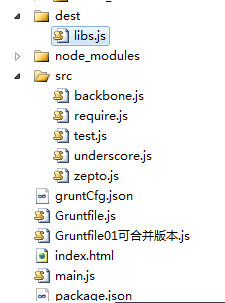
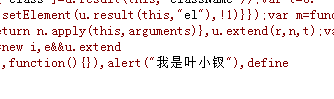
最后发现叶小钗三字，我就放心了，安全！！！！！！
配置任务/grunt.initConfig
前面我们简单的介绍了grunt相关的知识，这里我们这里还需要再熟悉下Gruntfile相关的知识点，比如说配置任务
grunt的任务配置都是在Gruntfile中的grunt.initConfig方法中指定的，这个配置主要都是一些命名性属性
比如我们上次用到的合并以及压缩的任务配置：
grunt.initConfig({ concat: { //这里是concat任务的配置信息 }, uglify: { //这里是uglify任务的配置信息 }, //任意非任务特定属性 my_property: 'whatever', my_src_file: ['foo/*.js', 'bar/*.js'] });
其中的my_property完全可能读取外部json配置文件，然后在上面任务配置中便可以，比如我们要压缩的文件为准或者最后要放到哪里，便可以在此配置
我们使用grunt的时候，主要工作就是配置任务或者创建任务，实际上就是做一个事件注册，然后由我们触发之，所以grunt的核心还是事件注册
每次运行grunt时，我们可以指定运行一个或者多个任务，通过任务决定要做什么，比如我们同时要压缩和合并还要做代码检查
grunt.registerTask('default', ['jshint','qunit','concat','uglify']);
当运行一个基本任务时，grunt并不会查找配置和检查运行环境，他仅仅运行指定的任务函数，可以传递冒号分割参数，比如：
grunt.registerTask('foo', 'A sample task that logs stuff.', function (arg1, arg2) {
if (arguments.length === 0) {
grunt.log.writeln(this.name + ", no args");
} else {
grunt.log.writeln(this.name + ", " + arg1 + " " + arg2);
}
});
运行结果如下：
$ grunt foo:testing:123 Running "foo:testing:123" (foo) task foo, testing 123 $ grunt foo:testing Running "foo:testing" (foo) task foo, testing undefined $ grunt foo Running "foo" task foo, no args
这里有个多任务的情况，就是一个任务里面实际上第一了多个东东，这个时候就有所不同
grunt.initConfig({ log: { demo01: [1,2,3], demo02: 'hello world', demo03: false } }); grunt.registerTask('log','log stuff.', function(){ grunt.log.writeln(this.target + ': ' + this.data); });
如果我们运行，运行情况如下：
???????
更多时候，我们实际场景中都会需要自定义任务，而在我们任务内部使用 grunt.task.run({}) 运行任务
这块的知识点，我们后面以实际例子说明
grunt插件
学习grunt主要就是学习grunt的插件使用，所以我们今天先来学习常用的几个插件
grunt-contrib-unglify
我们仍然以简单例子学习
module.exports = function (grunt) { grunt.initConfig({ uglify: { my_target: { files: { 'dest/libs.min.js': ['src/zepto.js', 'src/underscoce.js'] } } } }); grunt.loadNpmTasks('grunt-contrib-uglify'); }
这样会将src里面的zepto等文件打包值dest的lib.min.js中
压缩一个文件夹的所有文件
然后这段代码非常有意思，他会将一个文件目录里面的所有js文件打包到另一个文件夹
module.exports = function (grunt) { grunt.initConfig({ uglify: { my_target: { files: [{ expand: true, cwd: 'src', src: '**/*.js', dest: 'dest' }] } } }); grunt.loadNpmTasks('grunt-contrib-uglify'); }
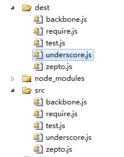
若是你希望给你文件的头部加一段注释性语言配置banner信息即可
grunt.initConfig({ pkg: grunt.file.readJSON('package.json'), uglify: { options: { banner: '/*! 注释信息 */' }, my_target: { files: { 'dest/output.min.js': ['src/input.js'] } } } });
grunt-contrib-concat
该插件主要用于代码合并，将多个文件合并为一个，我们前面的uglify也提供了一定合并的功能
在可选属性中我们可以设置以下属性：
① separator 用于分割各个文件的文字，
② banner 前面说到的文件头注释信息，只会出现一次
③ footer 文件尾信息，只会出现一次
④ stripBanners去掉源代码注释信息（只会清楚/**/这种注释）
一个简单的例子：
module.exports = function (grunt) { grunt.initConfig({ concat: { options: { separator: '/*分割*/', banner: '/*测试*/', footer: '/*footer*/' }, dist: { src: ['src/zepto.js', 'src/underscore.js', 'src/backbone.js'], dest: 'dist/built.js', } } }); grunt.loadNpmTasks('grunt-contrib-concat'); }
合并三个文件为一个，这种在我们源码调试时候很有意义
构建两个文件夹
有时候我们可能需要将合并的代码放到不同的文件，这个时候可以这样干
module.exports = function (grunt) { grunt.initConfig({ concat: { basic: { src: ['src/zepto.js'], dest: 'dest/basic.js' }, extras: { src: ['src/underscore.js', 'src/backbone.js'], dest: 'dest/with_extras.js' } } }); grunt.loadNpmTasks('grunt-contrib-concat'); }
这种功能还有这样的写法：
module.exports = function (grunt) { grunt.initConfig({ concat: { basic_and_extras: { files: { 'dist/basic.js': ['src/test.js', 'src/zepto.js'], 'dist/with_extras.js': ['src/underscore.js', 'src/backbone.js'] } } } }); grunt.loadNpmTasks('grunt-contrib-concat'); }
第二种写法便于使用配置文件，具体各位选取吧，至于读取配置文件的东西我们这里就先不关注了
grunt-contrib-jshint
该插件用于检测文件中的js语法问题，比如我test.js是这样写的：
alert('我是叶小钗')
module.exports = function (grunt) { grunt.initConfig({ jshint: { all: ['src/test.js'] } }); grunt.loadNpmTasks('grunt-contrib-jshint'); }
运行结果是：
$ grunt jshint Running "jshint:all" (jshint) task Linting src/test.js ...ERROR [L1:C15] W033: Missing semicolon. alert('我是叶小钗')
说我缺少一个分号，好像确实缺少.....如果在里面写明显的BUG的话会报错
多数时候，我们认为没有分号无伤大雅，所以，我们文件会忽略这个错误：
jshint: { options: { '-W033': true }, all: ['src/test.js'] }
这里有一个稍微复杂的应用，就是我们合并之前做一次检查，合并之后再做一次检查，我们可以这样写
module.exports = function (grunt) { grunt.initConfig({ concat: { dist: { src: ['src/test01.js', 'src/test02.js'], dest: 'dist/output.js' } }, jshint: { options: { '-W033': true }, pre: ['src/test01.js', 'src/test02.js'], after: ['dist/output.js'] } }); grunt.loadNpmTasks('grunt-contrib-concat'); grunt.loadNpmTasks('grunt-contrib-jshint'); }
$ grunt jshint:pre concat jshint:after Running "jshint:pre" (jshint) task >> 2 files lint free. Running "concat:dist" (concat) task File "dist/output.js" created. Running "jshint:after" (jshint) task >> 1 file lint free.
这里连续运行了三个任务，先做检查再合并，然后做检测，我这里写了两个简单的文件，如果将jquery搞进去的话，好像还出了不少BUG......
所以真的要用它还要自定一些规范，我们这里暂时到这里，先进入下一个插件学习
grunt-contrib-requirejs
我们的grunt打包程序极有可能与requirejs一起使用，但是几个插件学习下来又属requireJs的使用最为麻烦，因为网上资源很少，搞到这一段耗掉了我很多精力
这个时候你就会感叹，英语好不一定编程好，英语差想成为高手还是不简单啊！！！
requirejs: { compile: { options: { baseUrl: "path/to/base", mainConfigFile: "path/to/config.js", name: "path/to/almond", // assumes a production build using almond out: "path/to/optimized.js" } } }
官方的例子首先就是这几个属性：
baseUrl 代表所有的js文件都会相对于这个目录
mainConfigFile 配置文件目录
name ？？？
out 输出文件
一些参数我们不太了解，这个时候就只能以例子破之了
module.exports = function (grunt) { grunt.initConfig({ requirejs: { compile: { "options": { "baseUrl": "./", "paths": { "$": "src/zepto", "_": "src/underscore", "B": "src/backbone", "Test": "src/Test01" }, "include": [ "$", "_", "B", "Test" ], "out": "dest/libs.js" } } } }); grunt.loadNpmTasks('grunt-contrib-requirejs'); }
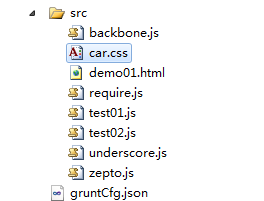
这样配置后，会将include里面的文件打包为out对应的文件，paths的本身意义不大，就是用于配置include里面的指向
这个时候我们来加个name看看有神马作用：
module.exports = function (grunt) { grunt.initConfig({ requirejs: { compile: { "options": { "baseUrl": "./", "name": 'src/test02.js', "paths": { "$": "src/zepto", "_": "src/underscore", "B": "src/backbone", "Test": "src/Test01" }, "include": [ "$", "_", "B", "Test" ], "out": "dest/libs.js" } } } }); grunt.loadNpmTasks('grunt-contrib-requirejs'); }
这样的话，会将name对应文件压缩到压缩文件的最前面，但是具体是干什么的，还是不太清楚，其英文注释说是单个文件或者其依赖项优化，不知道优化什么啊。。。囧！！！
requireJS基本的用法就是这样了，其详细信息，我们过段时间再来看看，下面说一下requireJS的其它用法
我们这里将requireJS的配置信息放在外面，而Gruntfile采用自定义任务的方式完成上面的功能
配置文件/cfg.json
{requirejs: { "options": { "baseUrl": "./", "paths": { "$": "src/zepto", "_": "src/underscore", "B": "src/backbone", "Test": "src/Test01" }, "include": [ "$", "_", "B", "Test" ], "out": "dest/libs.js" } }}
然后，这里我们便不是有initConfig的做法了，直接使用自定义任务
module.exports = function (grunt) { grunt.loadNpmTasks('grunt-contrib-requirejs'); grunt.registerTask('build', 'require demo', function () { //第一步，读取配置信息 var cfg = grunt.file.readJSON('cfg.json'); cfg = cfg.requirejs; grunt.config.set('requirejs', { test: cfg }); //第二步，设置参数 grunt.log.debug('参数：' + JSON.stringify(grunt.config())); //第三步跑任务 grunt.task.run(['requirejs']); }); }
$ grunt build --debug Running "build" task [D] Task source: d:\grunt\Gruntfile.js [D] 参数：{"requirejs":{"test":{"options":{"baseUrl":"./","paths":{"$":"src/zept o","_":"src/underscore","B":"src/backbone","Test":"src/Test01"},"include":["$"," _","B","Test"],"out":"dest/libs.js"}}}} Running "requirejs:test" (requirejs) task [D] Task source: d:\grunt\node_modules\grunt-contrib-requirejs\tasks\requirejs.j s >> Tracing dependencies for: d:/grunt/dest/libs.js >> Uglifying file: d:/grunt/dest/libs.js >> d:/grunt/dest/libs.js >> ---------------- >> d:/grunt/src/zepto.js >> d:/grunt/src/underscore.js >> d:/grunt/src/backbone.js >> d:/grunt/src/Test01.js
效果还是有的，最后我们介绍下requireJS打包模板文件
require与模板文件
我们知道，模板文件一般都是html，比如我们这里的demo01.html，对于这个文件我们应该怎么打包呢？其实很简单......
需要干两件事情：
① 引入require.text
② 加入模板文件
{ "requirejs": { "options": { "baseUrl": "./", "paths": { "$": "src/zepto", "_": "src/underscore", "B": "src/backbone", "test": "src/test01", "text": "src/require.text" }, "include": [ "$", "_", "B", "test", "text!src/demo01.html" ], "out": "dest/libs.js" } } }
于是，我们便成功将模板打入了
$ grunt build --debug Running "build" task [D] Task source: d:\grunt\Gruntfile.js [D] 参数：{"requirejs":{"test":{"options":{"baseUrl":"./","paths":{"$":"src/zept o","_":"src/underscore","B":"src/backbone","test":"src/test01","text":"src/requi re.text"},"include":["$","_","B","test","text!src/demo01.html"],"out":"dest/libs .js"}}}} Running "requirejs:test" (requirejs) task [D] Task source: d:\grunt\node_modules\grunt-contrib-requirejs\tasks\requirejs.j s >> Tracing dependencies for: d:/grunt/dest/libs.js >> Uglifying file: d:/grunt/dest/libs.js >> d:/grunt/dest/libs.js >> ---------------- >> d:/grunt/src/zepto.js >> d:/grunt/src/underscore.js >> d:/grunt/src/backbone.js >> d:/grunt/src/test01.js >> d:/grunt/src/require.text.js >> text!src/demo01.html
在文件中我们引用方式是：
"text!src/demo01.html" => '具体文件'
打包样式文件
样式文件的打包方式与js不太一样，这里我们下载css-min插件，并且在package.json中新增依赖项
{ "name": "demo", "version": "0.1.0", "description": "demo", "license": "MIT", "devDependencies": { "grunt": "~0.4.1", "grunt-contrib-jshint": "~0.6.3", "grunt-contrib-concat": "~0.3.0", "grunt-contrib-uglify": "~0.2.1", "grunt-contrib-requirejs": "~0.4.1", "grunt-contrib-copy": "~0.4.1", "grunt-contrib-clean": "~0.5.0", "grunt-strip": "~0.2.1", "grunt-contrib-watch": "~0.6.0", "grunt-contrib-cssmin": "~0.5.0" }, "dependencies": { "express": "3.x" } }
module.exports = function (grunt) { grunt.initConfig({ cssmin: { compress: { files: { 'dest/car.min.css': [ "src/car.css", "src/car01.css" ] } } } }); grunt.loadNpmTasks('grunt-contrib-cssmin'); }
如此一来我们便可以压缩合并CSS文件了：
$ grunt cssmin --debug Running "cssmin:compress" (cssmin) task [D] Task source: d:\grunt\node_modules\grunt-contrib-cssmin\tasks\cssmin.js File dest/car.min.css created.
移动打包文件
其实，grunt本身具有这样的功能，但是我们实际项目重会出现这种可能：
我们核心框架会有一套压缩代码，并且会在对应目录生成文件用于发布，但是这个地方的权限对各个频道团队是不可见的
所以，我们在各个频道的公共文件夹内应该将刚刚的文件给复制过去，这块代码其实很简单，不需要任何新知识都能实现：
我们这里依旧采用昨天的require相关的代码，但是一有个不同的地方就是，我们要同时在D盘的common文件夹中生成该文件
这个代码其实比较简单，这里我们先介绍一个新的插件copy
grunt-contrib-copy
该插件用于复制文件到你想要的文件夹处
grunt.initConfig({ copy: { main: { flatten: true, src: 'src/*.js', dest: 'dest/' } } });
这段代码就会将src中的js文件搞到dest里面，并且新建src文件夹：
$ grunt copy Running "copy:main" (copy) task Copied 7 files

若是不想复制文件夹只要文件应该这样干：
grunt.initConfig({ copy: { main: { flatten: true, // filter: 'isFile', expand: true, src: 'src/**.js', dest: 'dest/' } } });
这块完了，我们就来移动打包文件至D盘了
移动打包文件
这个时候代码这样写就好（也许移动前我们还想将其文件夹里面的东西销毁，暂时不考虑了）
module.exports = function (grunt) { grunt.initConfig({ copy: { main: { // flatten: true, // expand: true, src: 'dest/**.js', dest: 'd:/common/' } } }); grunt.loadNpmTasks('grunt-contrib-copy'); grunt.loadNpmTasks('grunt-contrib-requirejs'); grunt.registerTask('build', 'require demo', function () { //第一步，读取配置信息 var cfg = grunt.file.readJSON('cfg.json'); cfg = cfg.requirejs; grunt.config.set('requirejs', { test: cfg }); //第二步，设置参数 grunt.log.debug('参数：' + JSON.stringify(grunt.config())); //第三步跑任务 grunt.task.run(['requirejs']); }); grunt.registerTask('default', 'test demo', ['build', 'copy']); }
Running "build" task Running "requirejs:test" (requirejs) task >> Tracing dependencies for: d:/grunt/dest/libs.js >> Uglifying file: d:/grunt/dest/libs.js >> d:/grunt/dest/libs.js >> ---------------- >> d:/grunt/src/zepto.js >> d:/grunt/src/underscore.js >> d:/grunt/src/backbone.js >> d:/grunt/src/test01.js >> d:/grunt/src/require.text.js >> text!src/demo01.html Running "copy:main" (copy) task Copied 8 files
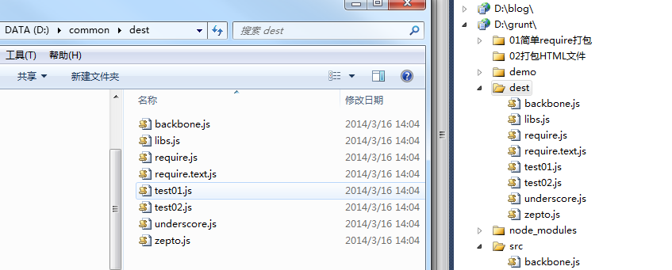
关于移动相关的知识点暂时介绍到这里，我们进入下一话题
分支/频道处理
我们在实际项目重会遇到这种情况，我们一个主干分支上可能拉出很多分支完成不同的功能，而各个分支就有那么一点点不同，那么这个时候打包工具该怎么办呢？
我们一般是这样处理的：
① 首先全局只会有一个打包工具
② 其次每一个分支都会有一个gruntCfg.json的配置文件，存储相关的打包信息
③ 每次打包时候便把响应的分支打印到各自的dest目录里面
为了模拟这一情况我们将grunt打包相关的文件放到D盘的grunt目录里面，并在D盘新建gruntDemo目录
然后我们在gruntDemo中建立一个项目，并且为这个项目拉一个分支，比如现在项目是地demo01与demo02
现在文件结构如下：
D:\GRUNTDEMO
├─demo01
│ │ gruntCfg.json
│ │
│ └─src
│ backbone.js
│ require.js
│ require.text.js
│ test01.js
│ test02.js
│ underscore.js
│ zepto.js
│
└─demo02
│ gruntCfg.json
│
└─src
backbone.js
require.js
require.text.js
test01.js
test02.js
underscore.js
zepto.js
这个时候，要实现功能最好的方法就是写自定义任务了，其它方案不好使，这个时候起配置文件也需要有一定修改，比如其中的路径需要加入参数信息
{ "requirejs": { "options": { "baseUrl": "<%= config.srcDir %>", "paths": { "$": "src/zepto", "_": "src/underscore", "B": "src/backbone", "test": "src/test01", "text": "src/require.text" }, "include": [ "$", "_", "B", "test", "text!src/demo01.html" ], "out": "<%= config.destDir %>/libs.js" } } }
这个时候initConfig相关信息时候，首先得传入path依赖的文件目录，以及输出的文件目录
module.exports = function (grunt) { grunt.loadNpmTasks('grunt-contrib-requirejs'); //channel为频道名称，project为项目名称，这里对应gruntDemo，branch为其分支，默认与grunt目录为平行关系，佛则package.json里面应该有配置信息 grunt.registerTask('build', 'require demo', function (channel, project, branch) { var path = '../' + channel + '/' + project + branch; grunt.log.debug('path: ' + path); //第一步，读取配置信息 var cfg = grunt.file.readJSON(path + '/gruntCfg.json'); cfg = cfg.requirejs; grunt.config.set('config', { srcDir: path, destDir: path + '/dest' }); grunt.config.set('requirejs', { main: cfg }); //第二步，设置参数 grunt.log.debug('param: ' + JSON.stringify(grunt.config())); //第三步跑任务 grunt.task.run(['requirejs']); }); grunt.registerTask('default', 'test demo', ['build', 'copy']); }
于是我们第一步工作成功了：
$ grunt build:gruntDemo:demo:02 --debug Running "build:gruntDemo:demo:02" (build) task [D] Task source: d:\grunt\Gruntfile.js [D] path: ../gruntDemo/demo02 [D] param: {"config":{"srcDir":"../gruntDemo/demo02","destDir":"../gruntDemo/dem o02/dest"},"requirejs":{"main":{"options":{"baseUrl":"../gruntDemo/demo02","path s":{"$":"src/zepto","_":"src/underscore","B":"src/backbone","test":"src/test01", "text":"src/require.text"},"include":["$","_","B","test","text!src/demo01.html"] ,"out":"../gruntDemo/demo02/dest/libs.js"}}}} Running "requirejs:main" (requirejs) task [D] Task source: d:\grunt\node_modules\grunt-contrib-requirejs\tasks\requirejs.j s >> Tracing dependencies for: d:/gruntDemo/demo02/dest/libs.js >> Uglifying file: d:/gruntDemo/demo02/dest/libs.js >> d:/gruntDemo/demo02/dest/libs.js >> ---------------- >> d:/gruntDemo/demo02/src/zepto.js >> d:/gruntDemo/demo02/src/underscore.js >> d:/gruntDemo/demo02/src/backbone.js >> d:/gruntDemo/demo02/src/test01.js >> d:/gruntDemo/demo02/src/require.text.js >> text!src/demo01.html
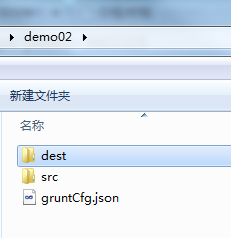
如果改变一下任务命令呢：
grunt build:gruntDemo:demo:01 --debug
结果证明也是没有问题的，这个地方我就不贴出来了，各位自己去试试，我们分支处理一块暂时到这里
频道处理其实我们这里已经做了，第一个参数是频道，第二个参数是项目，第三个参数为分支，所以频道相关我们暂时就不说了
native与HTML5打包
最后让我们来看看如何打包native文件，native文件的打包其实与打包HTML5的方式类似，只不过我们这里需要一点点配置，让一个项目可以打包成不同的效果
仍然以上面demo01为例，他的配置文件可能就需要做一定调整：
{ "requirejs": { "options": { "baseUrl": "<%= config.srcDir %>", "paths": { "$": "src/zepto", "_": "src/underscore", "B": "src/backbone", "test": "src/test01", "text": "src/require.text" }, "web": { "include": [ "$", "_", "B", "test" ], "out": "<%= config.destDir %>/libs.js" }, "app": { "include": [ "$", "_", "B", "test", "text!src/demo01.html" ], "out": "<%= config.destDir %>/libs_app.js" } } } }
这里为了表现一点web与native的不同，我特意将web中少包含一个text文件，具体还得各位项目中去实践
如此一来，我们的代码需要做些许调整：
module.exports = function (grunt) { grunt.loadNpmTasks('grunt-contrib-requirejs'); //type 打包app包还是web包，channel为频道名称，project为项目名称，这里对应gruntDemo，branch为其分支，默认与grunt目录为平行关系，佛则package.json里面应该有配置信息 grunt.registerTask('build', 'require demo', function (type, channel, project, branch) { var path = '../' + channel + '/' + project + branch; grunt.log.debug('path: ' + path); //第一步，读取配置信息 var cfg = grunt.file.readJSON(path + '/gruntCfg.json'); cfg = cfg.requirejs.options; grunt.config.set('config', { srcDir: path, destDir: path + '/dest' }); grunt.log.debug('param: ' + JSON.stringify(cfg)); grunt.log.debug('param: ' + cfg[type]['include']); var taskCfg = {}; taskCfg.options = {}; taskCfg.options.baseUrl = cfg.baseUrl; taskCfg.options.paths = cfg.paths; taskCfg.options['include'] = cfg[type]['include']; taskCfg.options.out = cfg[type].out; grunt.config.set('requirejs', { main: taskCfg }); //第二步，设置参数 grunt.log.debug('param: ' + JSON.stringify(grunt.config())); //第三步跑任务 grunt.task.run(['requirejs']); }); grunt.registerTask('default', 'test demo', ['build', 'copy']); }
于是便可以运行了！！！
$ grunt build:app:gruntDemo:demo:01 --debug Running "build:app:gruntDemo:demo:01" (build) task [D] Task source: d:\grunt\Gruntfile.js [D] path: ../gruntDemo/demo01 [D] param: {"baseUrl":"<%= config.srcDir %>","paths":{"$":"src/zepto","_":"src/u nderscore","B":"src/backbone","test":"src/test01","text":"src/require.text"},"we b":{"include":["$","_","B","test"],"out":"<%= config.destDir %>/libs.js"},"app": {"include":["$","_","B","test","text!src/demo01.html"],"out":"<%= config.destDir %>/libs_app.js"}} [D] param: $,_,B,test,text!src/demo01.html [D] param: {"config":{"srcDir":"../gruntDemo/demo01","destDir":"../gruntDemo/dem o01/dest"},"requirejs":{"main":{"options":{"baseUrl":"../gruntDemo/demo01","path s":{"$":"src/zepto","_":"src/underscore","B":"src/backbone","test":"src/test01", "text":"src/require.text"},"include":["$","_","B","test","text!src/demo01.html"] ,"out":"../gruntDemo/demo01/dest/libs_app.js"}}}} Running "requirejs:main" (requirejs) task [D] Task source: d:\grunt\node_modules\grunt-contrib-requirejs\tasks\requirejs.j s >> Tracing dependencies for: d:/gruntDemo/demo01/dest/libs_app.js >> Uglifying file: d:/gruntDemo/demo01/dest/libs_app.js >> d:/gruntDemo/demo01/dest/libs_app.js >> ---------------- >> d:/gruntDemo/demo01/src/zepto.js >> d:/gruntDemo/demo01/src/underscore.js >> d:/gruntDemo/demo01/src/backbone.js >> d:/gruntDemo/demo01/src/test01.js >> d:/gruntDemo/demo01/src/require.text.js >> text!src/demo01.html
结语
我们这个星期花了三天时间一起学习了grunt打包相关的知识点，需要这些知识对您有用，搞这个东西还花费了不少心血呢！！！
若是文中有误请一并提出，后续若是这块有所得我们再一起总结吧
原来是分成三段，这里将之合一方便各位连贯阅读，篇幅大，记得点赞！